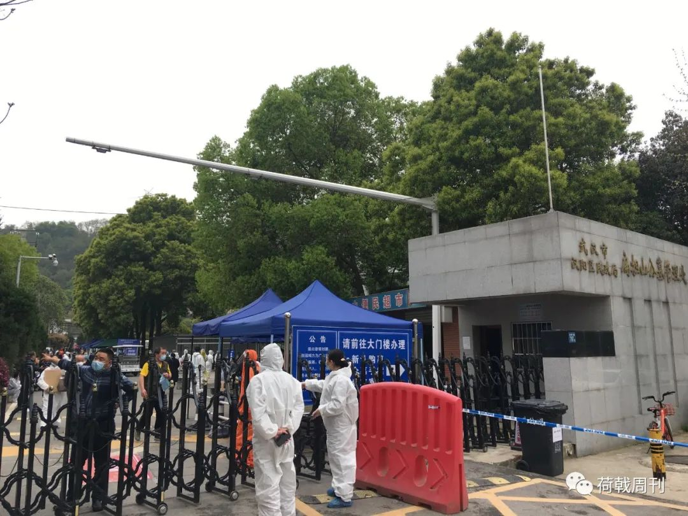
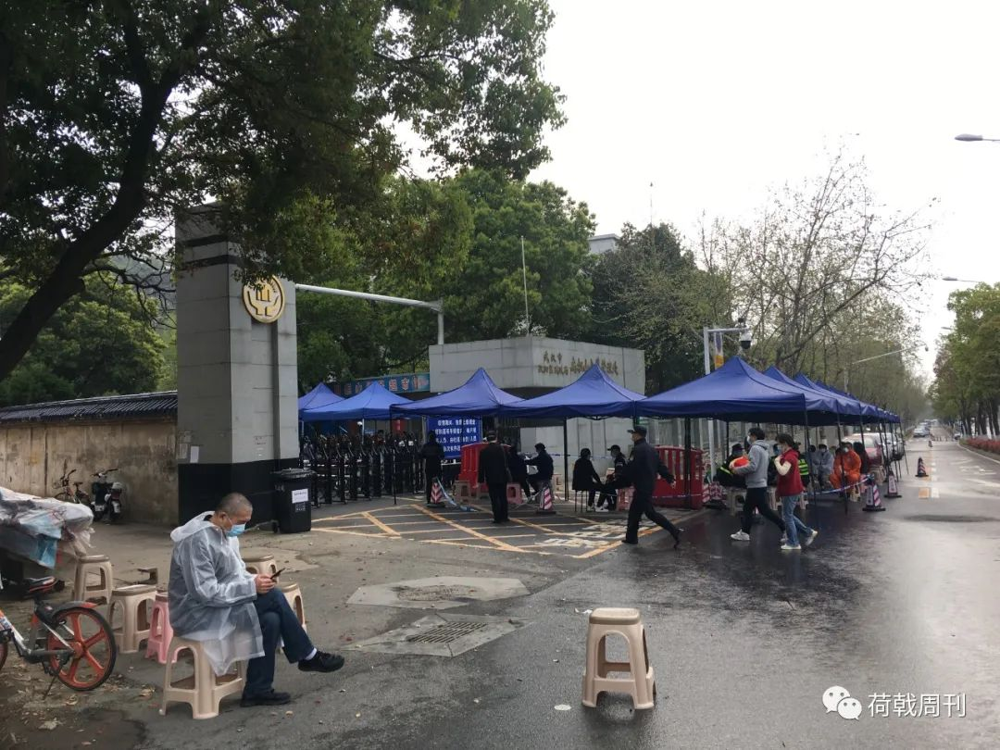
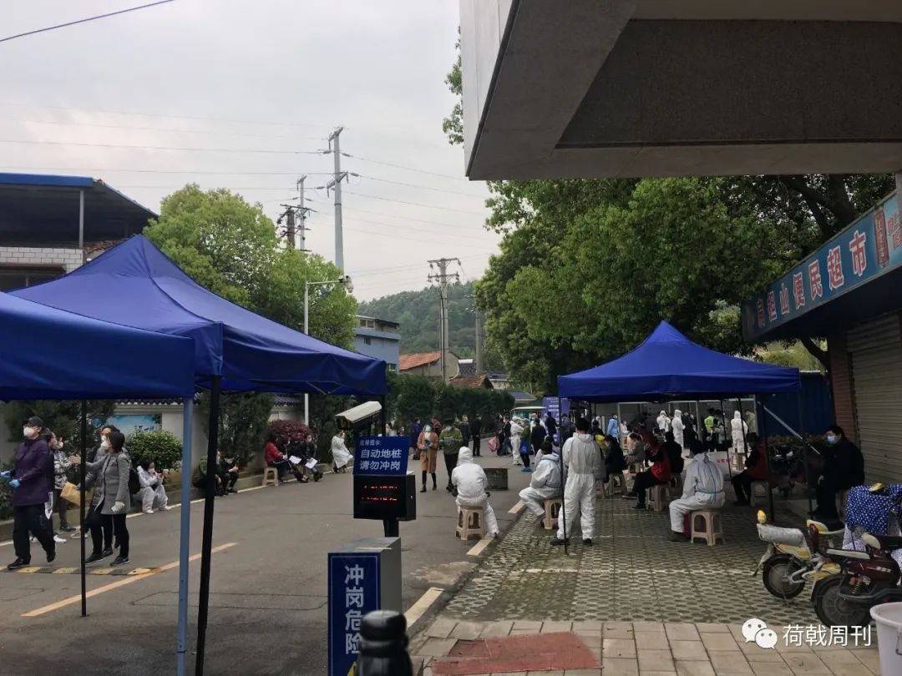
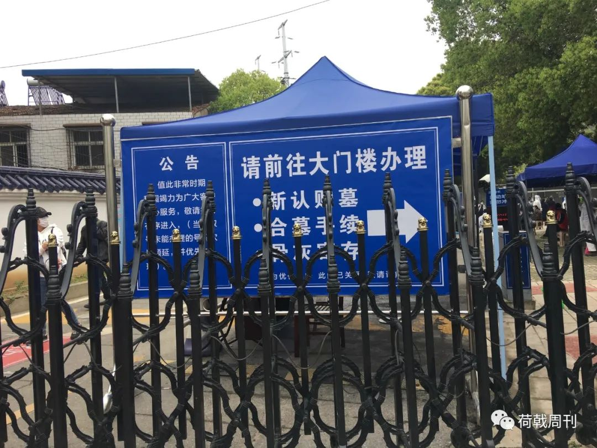

口述实录 | 独自进武汉当心理志愿者，我竟也两次崩溃
原文链接 备份链接 早春的武汉春风拂面，这两天接到爸妈打来的电话，询问我的近况。我告诉他们我过得好着呢：吃着大餐、住着五星级的酒店。其实，我特别想念妈妈蒸的馒头，就算只就着大蒜，我也能吃两个碗大的馍馍。 口述 | 毛 平 整理 | 沈 …

幸存者口述：那些领取榾咴以及购买墓哋的人们
访谈时间：3月24号上午10点、2月7日下午5点
访谈对象：新冠肺炎死者家属/轻症患者

公墓：每天都需要早起排队抢号
我住在硚口，这里是疫情重灾区，离扁担山公墓比较近，只需要十几分钟，开车过个江就到了。母亲的榾咴还没有领取，我们想着先来选墓哋，已经通知了社区，跟殡仪馆预约了时间。至于说葬礼，现在也没法儿请亲戚们过来，还是等疫情过去了之后再说，很多人目前也出不了门。
我今天五点钟就去了公墓。现在都需要排号，昨天放了70个，今天放了80个，结果早上七点半的时候就放完了。有的家属连续来了三天，终于办成了手续。社区要求只能去两个家属，我和我姐姐去的。选的墓哋价格是七万八千八，疫情期间去世的人可以打七折，算下来是五万四千五。4月8号武汉才解封，已经是清明节之后了。有些家属选择把榾灰寄存在公墓那边，规定最多可以存放3个月，那时候怎么也应该已经解封了。
我母亲走的时候还不到71岁，那是2月17号，我们接到了医院的电话，当时我还在东西湖方舱里住院。我姐姐去了医院，给我母亲办理死亡证明，拿回了住院的押金，但没看到遗体，直接运到了殡仪馆，直系家属也不让送。遗物就是一个苹果手机，一张医保卡，还有一个身份证，经过消毒处理，过了几天还给了我们。还有一些个人物品，比如收音机等等，就集中处理了。
排队的时候，我后面是两个老人，七十多岁，他们来给去世的儿子买墓地。他们跟我讲，儿子从发烧到走，三天。他们拿的单子上有身份证的复印件，77年的，只比我小一岁。我也没办法问，伤心事。
旁边还有一个他们的熟人，是一个婆婆，给去世的老伴买墓地。两家人没说几句话，那个老人就哭起来。这种家庭太多了，有的不是走一个，而是走几个，比如那个导演一家。

3月23日下午，扁担山公墓门口，家属领取完榾咴，前来寄存
医院：地狱也无法描述那些景象
2月初的那些天，从5号到8号，我每天都去第四医院西院区的发热门诊，给我母亲排队打针，跟周围的人都熟了，带着口罩还是能认出来。我还好，没有什么症状，但是也不敢让我哥哥姐姐来，两个小孩送到他们家去了。
能打上针就不错了，一针打完了恨不得直接排下一针，每次都要排十个小时。每次是三点钟起床，一口水都不敢喝，口罩也不敢摘，排到下午三四点钟，五六点钟回来，喝口水吃口饭，歪头就睡。
每天都可以看到有人死去，一点尊严都没有。最多的时候2个小时之内死了四个，那天我在二楼打针，从六点钟开始，还不到八点钟，先是从楼上的病房里抬下来两具，这算是确诊的。我身边又倒下了两个，下午在一楼又死两个。这些在医院里还没有做核酸检测就去世的人都没有算在新冠肺炎的死亡名单里，连疑似病例也不算。
早上八点钟去世的那个婆婆，差不多七十多岁，从后半夜开始排队，打完针，没走两步路，就倒了下去，没救回来，就离我两米远。两个儿子年纪跟我差不多，搞了一张床单裹了起来，晚上九点钟才拖走。
人手和车子都不够，只有一个负责维持治安的人在现场。殡仪馆的车子原来是一辆车托一具遗体，结果一车托八个。那天我去外面抽烟，看到一个集装箱一样的货车抬走了七八个人。那个场景，地狱都比它强。

3月24日上午，扁担山公墓
方舱：折腾到半夜，结果被拒收
2月6号那天晚上折腾了一夜，还一直下着雨。凌晨一点钟，社区的人跟我说，已经给我和我母亲联系到了位于武展中心的江汉方舱医院。我问社区的人，方舱那里有没有药吃，有没有针打，他说都有。社区为了完成他们的任务，让我到了方舱之后跟工作人员说我母亲病情不重，年龄也不到六十三岁，我没同意。到了地方，说是有年龄限制，重症患者也不收，我们还拎着大包小包。
我开着车，我跟我母亲都确诊了，她年纪大了，还是盲人，症状比较重，弄到凌晨三点钟，没办法，我又开车去第四医院的发热门诊给她打针。医生跟我说了，我母亲这个情况，随时有可能离开我们，今天又等了一天，搞到早上八点钟才回家。我们还跟我爸和我老婆住在一块，没有隔离。我父亲一直在咳嗽，我老婆也有点症状。父母都是盲人，需要人照顾，这么多人，没办法，走不了。
我应该就是陪我母亲去打针的时候感染上的，但是我的症状不重，方舱医院可以去，隔离点也行，或者我去另一个地方自行隔离，关键是我母亲需要照顾。1月28号，我母亲开始发烧，2月1号，去社区医院做了CT。当时医生说还好，可能是病毒性感冒，我问他们能不能打针，社区医生说不需要打针，回家等着就行，结果吃了两天药，根本没效果，第三天早上我带我母亲去社区医院，他们就让我们去医院门诊。
我确诊的时间记不清是哪天了，拿到确诊书之后，我第一时间跟社区和物业的人说了情况。当时我们的小区还贴着“无疫情门洞”的字样，我跟楼管说，让大家注意，这是我能做的，但是一直到现在，那个“无疫情门洞”还贴着呢，也没有人上门消毒。居委会在他们门口放了两个板凳，不让人进。
隔离点是一个附近的小酒店，我去不了，因为我母亲需要到医院去，需要人照顾。2月9号，终于把我母亲安排进了医院，我也去了东西湖方舱。2月17日上午十一点，母亲医治无效去世。

附：另一位死者家属的经历
我从23号上午十一点开始排队，到下午四点，终于办完了所有手续，一次性缴齐了所有费用，共计九万余元。父亲于2月29日去世。我还没有领取父亲的榾灰，计划下个月初下葬。
2月8号，父亲出现乏力的症状，搬到隔离酒店之后，开始发烧。当时我带着父亲去同济医院门诊，拍了CT，确诊感染，但医院没有床位，只能回酒店继续等待。2月18号，同济医院光谷院区终于腾出了床位，但是住进去两天之后，就接到电话说转到了ICU病房。
2月29号凌晨，我接到了医院的电话，父亲去世了。无法见到最后一面，到医院的时候，遗体已经在殡仪馆火化。没有遗物，我打电话给护士长，但无人接听。医院的人说去找，后来又找到了手机、身份证和卡包等物品，家里的钥匙没找到。医院让我们到重症监护室楼下，不能上楼，他们把东西送下来
人走了，但什么都没介绍，具体时间不知道，原因也没跟我说。到底是因为肺不好，还是别的原因，都不清楚。去年年底刚做了心脏手术，我是怕是不是心衰引起的。
延伸阅读：
知情者口述：盛会，病人，难以逾越的冬天
患者口述：火车站，水果刀，与世界上最好喝的稀粥
（本文个别字词进行了处理）
长按二维码向我转账
谢谢
受苹果公司新规定影响，微信 iOS 版的赞赏功能被关闭，可通过二维码转账支持公众号。
原文链接 备份链接 早春的武汉春风拂面，这两天接到爸妈打来的电话，询问我的近况。我告诉他们我过得好着呢：吃着大餐、住着五星级的酒店。其实，我特别想念妈妈蒸的馒头，就算只就着大蒜，我也能吃两个碗大的馍馍。 口述 | 毛 平 整理 | 沈 …
原文链接 备份链接 访谈对象：确诊患者/退休教师 采访/整理：画天 访谈时间：2月15日晚上 要活命，必须吃 我住在洪山区狮子山街道，先是在我们华中农业大学的医院拍了胸片，医生怀疑我肺部有问题，让我去外面的医院做CT。我问社区能不能接送， …
原文链接 备份链接 出院——隔离——回家，越来越多人走在这样一条重回阳光下的道路上。最后的战役已经打响，所有人都还需要站好最后一班岗 ***********刘以秦 | 文*********** …
原文链接 备份链接 纽约州计划在纽约市曼哈顿西区的贾维茨会议中心建造一所方舱医院，大约能提供1000个床位。加州和华盛顿州也会建设类似的医院。 文 | 刘朝晖 中国的方舱医院已经休舱，意大利、西班牙、美国、俄罗斯、伊朗等许多国家结合本国国 …
原文链接 备份链接 作者近照 这是纽约的一个朋友写的情况，其实随着疫情的蔓延，美国许多医院都出现了口罩等医护用品的短缺。好友梅玫在硅谷帮忙收集民众捐赠的口罩送到医院，我在的南加州也有TOC在组织捐款捐口罩给当地医院。前一阵大学同学给我们北 …